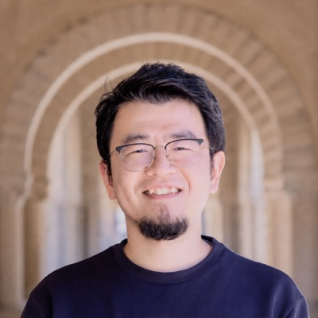
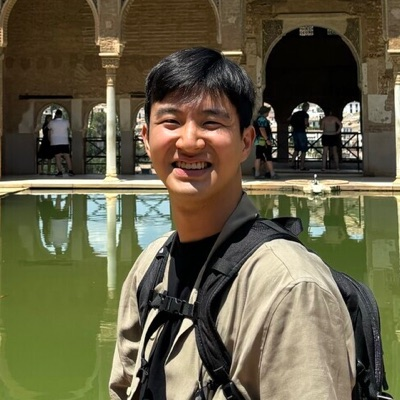
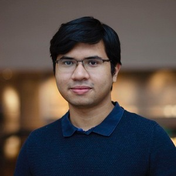
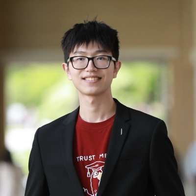
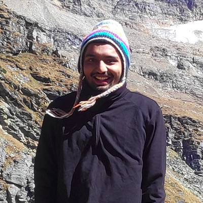
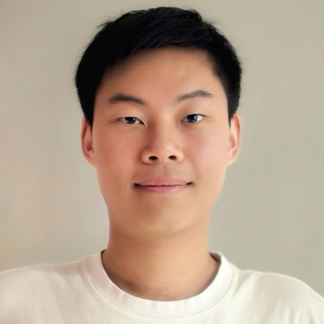
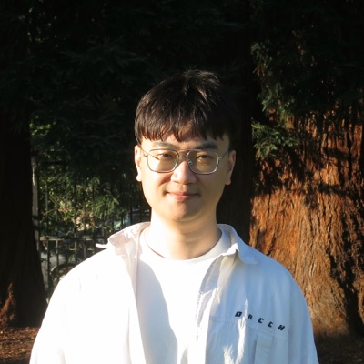
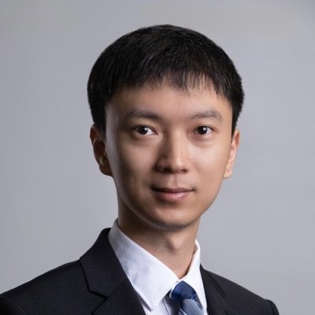

Overview
For a robot to be truly general, it must be able to manipulate more than an arm’s length away. Prior research has approached this goal from two directions: navigation and SLAM researchers build systems with spatial understanding capabilities that enable robots to move through large environments, while manipulation researchers develop robot policies, skills, and controllers for contact-rich interactions. Mobile manipulation sits at their intersection, but existing approaches still often treat navigation and manipulation as separate components instead of integrating them into a unified system.
Recent advances in spatial perception, robot foundation models, scalable data collection, whole-body control, as well as increasingly accessible wheeled and legged platforms make it possible to study these capabilities together on meaningful real-world tasks. As robots move beyond tabletop settings, they must jointly decide where to move, what to observe, and how to interact over long horizons.
In this workshop, we bring together researchers in hardware, spatial AI, control, planning, and robot learning to answer the following questions:
The workshop brings these questions together around complete mobile manipulation systems, connecting communities that often meet separately. ICRA’s breadth makes it particularly suited to this discussion. Expected outcomes include shared evaluation priorities, new collaborations, and research directions for robots that can seamlessly perceive, move, and interact. The workshop aligns most closely with the RAS TCs on Mobile Manipulation, Robot Learning, and Computer & Robot Vision.
Discussion Topics
TBD
Invited speakers
Schedule
| Time | Activity |
|---|---|
| 08:30–08:40 | Opening remarks |
| 08:40–09:15 | Li YiTsinghua University |
| 09:15–09:50 | Nikolay AtanasovUC San Diego |
| 09:50–10:10 | Student talks I |
| 10:10–11:10 | Poster session I and coffee break |
| 11:10–11:45 | Zhengyi LuoNVIDIA |
| 11:45–12:30 | Panel: connecting spatial understanding and physical interaction |
| 12:30–14:00 | Lunch |
| 14:00–14:35 | Laura SmithPhysical Intelligence |
| 14:35–15:10 | Rika AntonovaUniversity of Cambridge |
| 15:10–15:30 | Student talks II |
| 15:30–16:10 | Poster session II and coffee break |
| 16:10–16:45 | Shuran SongStanford University |
| 16:45–17:00 | Sponsor talk — hardware platforms for mobile manipulation |
| 17:00–17:45 | Debate: unified learned policies versus agentic, modular systems |
| 17:45–18:00 | Awards and closing remarks |
Panel and debate
11:45–12:30
Panel
connecting spatial understanding and physical interaction
17:00–17:45
Debate
Questions collected from participants and the broader community will guide the panel and debate, including the hardware, data, evaluation, and safety considerations underlying different approaches. Attendees will vote before and after the debate and have opportunities to share their views. Closing remarks will summarize shared challenges and promising research directions.
Organizers
- Jingyun Yang Stanford University
- Seungchan Kim Carnegie Mellon University
-

Dian Wang University of Macau -

Sunghwan Kim UC San Diego -

Nur Muhammad “Mahi” Shafiullah UC Berkeley / Amazon FAR - Xiaomeng Xu Stanford University
-

Wenli Xiao Carnegie Mellon University -

Rutav Shah UT Austin - Yuchen Xiao Unitree Robotics
-

Yutian Chen Stanford University -

Wenlong Huang Stanford University -

Chen Wang University at Buffalo - Yulun Tian University of Michigan